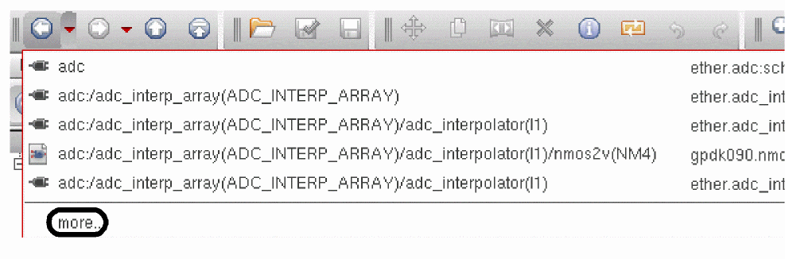
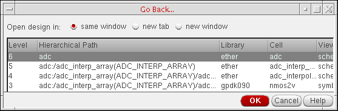
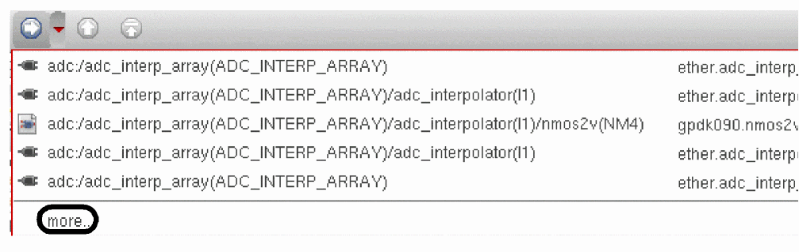
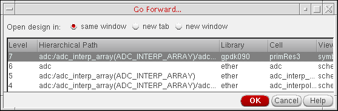

12
Navigating Cellviews and Hierarchies
You can use the Go toolbar to do the following:
- Sequentially or non-sequentially navigate through a cellview hierarchy.
- Navigate between cells and views in various designs.
Use of Go toolbar cell/cellview navigation will only apply to the current session. If required, you can however choose to
<install_directory>.cadence/dfII/history/<username>.history. For more information on storage see File Storage.You can access the Go toolbar from any of the following Cadence applications:
- Virtuoso Schematic Editor XL
- Virtuoso Layout Suite Viewer/XL/EXL
- Virtuoso ADE Explorer
- Virtuoso ADE Assembler
- Virtuoso ADE Verifier
You can read more about cell and design navigation in the following sections:
- Accessing the Go Toolbar
- Moving Back through a Design
- Moving Forward through a Design
- Moving Up a Design
- Moving to the Top of a Design
Accessing the Go Toolbar
To access the Go toolbar, either:
The icons on the Go toolbar are as follows (in order from left to right):
| Icon | Brief Description |
For more information see Moving Back through a Design.
The equivalent SKILL command is deBack.
|
|
|
|
|
The Up icon is only activated if you have descended into a hierarchy. Selection of the Up icon will move you up one level in the hierarchy. For more information see Moving Up a Design. |
|
|
The Top icon is only activated if you have descended into a hierarchy. Selection of the Top icon will move you up to the cell/cellview that represents the top of the hierarchy. For more information see Moving to the Top of a Design. |
Moving Back through a Design
Use the Back icon to return to the cell/cellview that was displayed immediately prior to the current view. Continued selection of this option allows you to move back through successive views, dependent upon availability.
Use the Back drop-down icon (red triangle) to display a list of previously displayed cells/cellviews.
The list presented allows you select a view and navigate straight to it without having to repeatedly scroll back. The cellview at the top of the drop-down list represents the most recently viewed cellview.
The maximum number of cellviews displayed at a time in the drop-down list is five. When the number of possible cellviews to go back to exceeds five, an additional more menu item appears on the drop-down list.
To move back through the extended hierarchy, do the following:
-
On the Go toolbar, click the down-facing red arrow to the right of the Back button.
A drop-down menu appears.
 -
Click more.
The Go Back form appears.
 - Select a level.
-
Click OK.
The program restores the selected level on the schematic pane.
Moving Forward through a Design
Use the Forward icon to move forward to cells/cellviews that have already been visited using the Back icon. Continued selection of this option allows you to move forward through successive views, dependent upon availability.
Use the Forward drop-down icon (red triangle) to display a list of previously displayed cells/cellviews. The list presented allows you select a view and navigate straight to it without having to repeatedly scroll forward. The cellview at the top of the drop-down list represents the most recently viewed cellview.
The maximum number of cellviews displayed at a time in the drop-down list is five. When the number of possible cellviews to go forward to exceeds five, an additional more menu item appears on the drop-down list.
To move forward through the extended hierarchy, do the following:
-
On the Go toolbar, click the down-facing red arrow to the right of the Forward button.
A drop-down menu appears.
 -
Click more.
The Go Forward form appears.
 - Select a level.
-
Click OK.
The program restores the selected level on the schematic pane.
Moving Up a Design
Use the Up icon to move up a single cell hierarchy and display the cellview that is found one level up. Multiple selection of the Up command will take you up the corresponding number of levels in the hierarchy, should they exist.
The Up icon is only activated if you have descended into a hierarchy and will be disabled once the top of that hierarchy is reached. Use of Up contains you within the current hierarchy.
Moving to the Top of a Design
Use the Top icon to open the cellview that represents the top of the hierarchy in the current session window.
The Top icon is only activated if you have descended into a hierarchy and will be disabled once the top of that hierarchy is reached.
Return to top